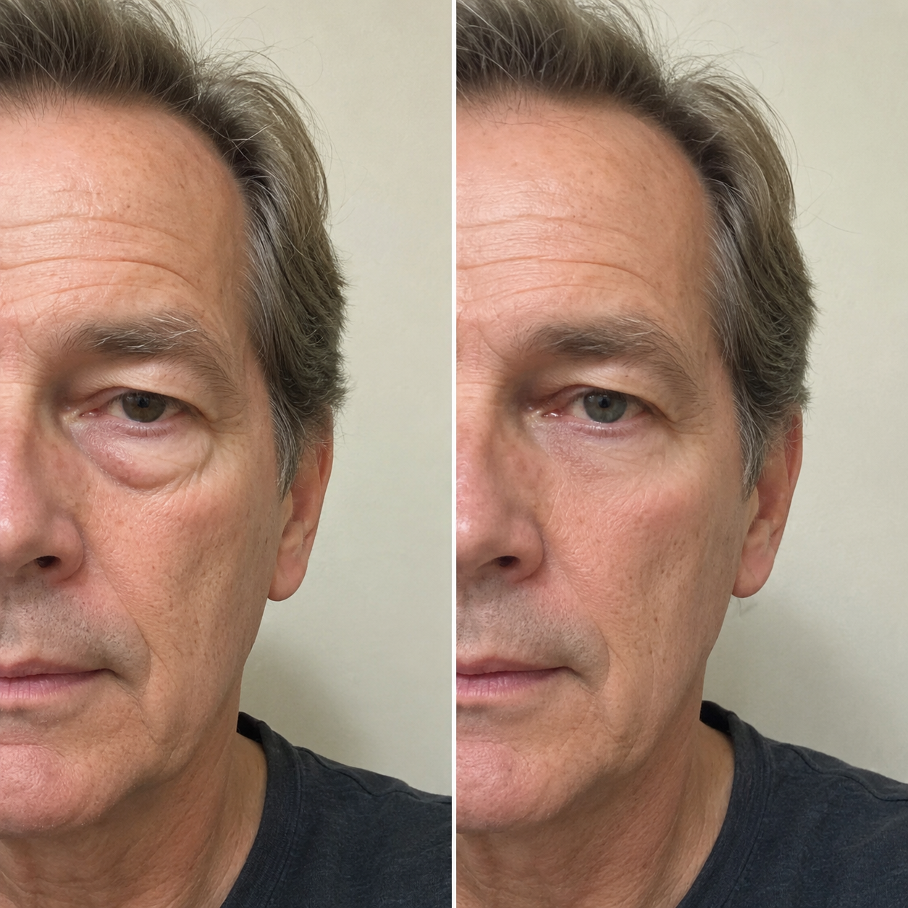
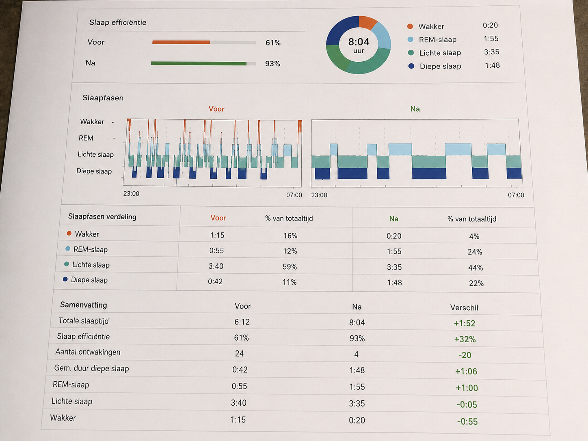

Afgelopen dinsdag gebeurde er iets bij de supermarkt dat mij aan het huilen maakte in de auto. Geen verdrietige tranen — blijde tranen.
De caissière keek naar mijn ID, toen naar mij, en zei: "Wacht even... u bent echt 52? U ziet er minstens 10 jaar jonger uit. En u bent zo... energiek."
Zes maanden geleden zag ik er uit alsof ik 65 was. Donkere kringen. Een lege blik. Ik lag elke nacht wakker, piekerend over alles en niets — amper vier uur slaap per nacht.
Geen slaappillen. Geen dure apps. Geen ingewikkelde meditatiecursussen van €300.
Gewoon een 7-minuten avondroutine die een Duitse slaapexpert al 20 jaar onderzoekt — en die nu eindelijk beschikbaar is als e-book bundel.
"Uw brein weet niet hoe het moet slapen — niemand heeft het u geleerd"

Toen ik Dr. Joachiem van Blievaden voor het eerst ontmoette — via een online seminar van het Charité Slaapcentrum in Berlijn — zei hij iets dat alles veranderde:
Dr. Van Blievaden is geen influencer-dokter. Hij is een van de meest geciteerde slaaponderzoekers in Duitsland, met meer dan 30 jaar klinisch onderzoek en publicaties in het European Journal of Sleep Medicine.
Samen met 12 andere slaapartsen bundelde hij zijn bevindingen in drie e-books én een complete e-cursus — zodat je weer kunt slapen zoals vroeger: diep, onvergetelijk en uitgerust.
Wat er in het pakket zit (en waarom het werkt)
- Slaap Beter Slapen — de complete gids
- De 7 Gouden Slaapregels — dagelijkse routines
- Snel Inslaap Methode — binnen 10 minuten weg
- E-cursus Dr. Joachiem van Blievaden — de totale videogids naast de e-books
Week 1: "Wacht... slaap ik echt al?"
Na 7 dagen viel ik in slaap binnen 12 minuten. Voorheen lag ik 45 tot 90 minuten wakker. Mijn man zei: "Je snurkt weer. Dat heb ik in maanden niet gehoord."
Voor en na het gebruik maken van de tips van Dr. Joachiem van Blievaden

Donkere kringen, een vermoeide blik en opgezwollen ogen — versus uitgerust, helder en zichtbaar jonger na drie weken beter slapen.

Testresultaten na 21 dagen
Gemeten bij een deelnemer na 21 dagen het volgen van de complete methode — inclusief de e-cursus en alle drie de e-books:

Week 3: Mensen begonnen het te merken
Collega's vroegen wat ik anders deed. Mijn huid zag er beter uit. Ik hoefde geen koffie meer om 15:00 uur. En die caissière bij de supermarkt? Die was het bewijs dat iedereen het zag.
Mijn aanbeveling
Als u net als ik jarenlang wakker lag — piekerend, uitgeput, wanhopig — dan is dit wat ik u zou adviseren:
Geen slaappillen. Geen wachtlijst van 12 maanden. Gewoon wetenschappelijk bewezen methodes die uw circadiaan ritme herstellen — in uw eigen tempo, thuis.
Slaap Beter Slapen — Compleet Pakket
3 e-books + e-cursus Dr. Van Blievaden · Direct geleverd per e-mail
- Slaap Beter Slapen — de complete gids
- De 7 Gouden Slaapregels
- Snel Inslaap Methode
- E-cursus Dr. Joachiem van Blievaden
44% korting — tijdelijk aanbod
Claim mijn prijs nu →30 dagen geld-terug-garantie · Geen vragen gesteld
Pad 1: Sluit deze pagina. Blijf wakker liggen. Blijf moe. Wacht nog maanden met hopen dat het vanzelf overgaat.
Pad 2: Bestel vandaag voor €17. Probeer het 30 dagen risicovrij. Sluit u aan bij duizenden Nederlanders die eindelijk weer door slapen.
Bekijk beschikbaarheid →